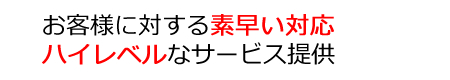
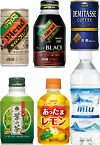
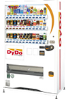
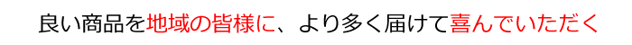
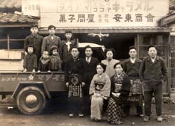

当社が選ばれる理由
-

地域密着型の事業展開
１営業日以内に対応できる範囲を商圏と定め、素早い対応を実現しています。
-

取り扱い商品へのこだわり
地域の皆様に間違いなく喜んでいただける商品・サービスに限定しています。
-

受け継がれる伝統
昭和25年の創業以来、変わらぬ精神で営業を続けています。
理由その１：地域密着型の事業展開

を実現するため、「連絡をいただいてから１営業日以内に対応できる」範囲を商圏と定め、お客様の要望を、いち早く聞き取り、情報密度の濃い営業展開を行っています。
自動販売機オペレートサービスは、大分市・別府市・由布市・臼杵市に限定しています。

理由その２：取り扱い商品へのこだわり
日々生み出される多くの商品・サービスの中から、地域の皆様に『間違いなく喜んでいただける』商品・サービス群に限定して取り扱っております。
また、一瞬の流行に流されることなく、長く文化として根付いていくようなサービス提供のしくみ作りに熱心なメーカー様とパートナーシップを結んでいます。
（DyDo製品へのこだわり）
自動販売機でしか買えないドリンクの商品価値を、地域の皆様に、より多く届けること。
付加価値に圧倒的に優れたメーカーの自動販売機を、地域に展開することに尽力しています。

●ドリンクの優れた商品価値
- 主力缶コーヒーは、香料を一切使用せずに製造
- 商品の約90%を自動販売機のみで販売
- 量販店での安易な安売りをせず、商品の品質・価値を維持
- 自動販売機でしか買えないので、自動販売機設置のメリットが極めて高い

●自動販売機の優れた付加価値
- ポイントカード機能……１本買うごとに１ポイントたまるカードリーダー付き自販機
- おしゃべり機能……「今日も暑いですね」「頑張ってください」など、コミュニケーションする自販機
- ルーレット機能……ドキドキする瞬間が楽しい、当たり機能付き自販機
- ユニバーサル自販機……商品取り出し口、商品ボタンが押しやすい位置に配置された自販機
- 省エネ自販機……自動学習機能・ヒートポンプ機能など、消費電力を抑えた自販機
理由その３：受け継がれる伝統
終戦後の混乱の中、自転車に乗ってキャラメルや、お菓子を行商していた創業当初から変わらない信念。それが、

ことです。
創業当初の物のない時代には、甘いものがとても喜ばれ、キャラメルなどは飛ぶように売れ、仕入れてもすぐになくなるほど大人気で、流通の発達していない時代ですから、仕入れに風呂敷を持って大阪まで行き、もって帰れるだけのキャラメルを仕入れては、行商することの繰り返しだったそうです。
時代にあわせ、業態や取扱商品は少しずつ変わっても「その時代にあった、良い商品、良いサービスを、誠実に提供する」という基本姿勢は、創業当初から変わることなく受け継がれています。

この豊かな郷土を、弊社のサービスを通じて、さらに豊かで住みよい街にして行くことが、私たち自身を幸せにしていくことだと信じ、その時代にあわせて業態を変えながらも、皆様の暖かいご支持をいただきながら、今日を迎えました。
これからも私たちは、その次代において要望されるサービスの提供と、技術の向上に邁進し、地域の皆様の豊かな暮らしと喜びを創造し続ける企業であるために、努力してまいります。